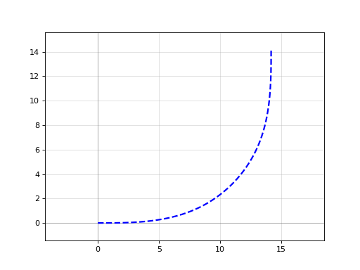
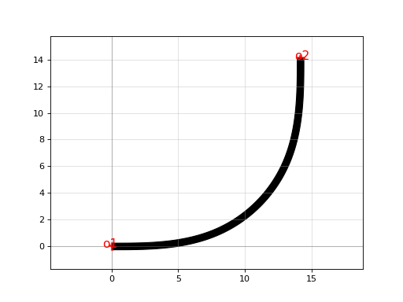

gdsfactory.path.Path
gdsfactory.path.Path#
- class gdsfactory.path.Path(path=None)[source]#
Bases:
gdsfactory.component_layout._GeometryHelperPath object for smooth Paths. You can extrude a Path with a CrossSection to create a Component.
- Parameters
path – array-like[N][2], Path, or list of Paths. Points or Paths to append() initially.
Methods
__init__([path])Creates an empty path.
append(path)Attach Path to the end of this Path.
copy()Returns a copy of the Path.
Calculates Path curvature.
extrude([cross_section, layer, width, ...])Returns Component by extruding a Path with a CrossSection.
hash_geometry([precision])Computes an SHA1 hash of the points in the Path and the start_angle and end_angle.
length()Return cumulative length.
mirror([p1, p2])Mirrors the Path across the line formed between the two specified points.
move([origin, destination, axis])Moves the Path from the origin point to the destination.
movex([origin, destination])Moves an object by a specified x-distance.
movey([origin, destination])Moves an object by a specified y-distance.
offset([offset])Offsets Path so that it follows the Path centerline plus an offset.
plot()Plot path in matplotlib.
rotate([angle, center])Rotates all Polygons in the Component around the specified center point.
to_dict()Attributes
Returns the bounding box of the Path.
Returns the center of the bounding box.
Returns the (x, y) size of the bounding box.
Returns the x-coordinate of the center of the bounding box.
Returns the maximum x-value of the bounding box.
Returns the minimum x-value of the bounding box.
Returns the horizontal size of the bounding box.
Returns the y-coordinate of the center of the bounding box.
Returns the maximum y-value of the bounding box.
Returns the minimum y-value of the bounding box.
Returns the vertical size of the bounding box.
- property bbox#
Returns the bounding box of the Path.
- append(path)[source]#
Attach Path to the end of this Path.
The input path automatically rotates and translates such that it continues smoothly from the previous segment.
- Parameters
path – Path, array-like[N][2], or list of Paths The input path that will be appended.
- offset(offset=0)[source]#
Offsets Path so that it follows the Path centerline plus an offset.
The offset can either be a fixed value, or a function of the form my_offset(t) where t goes from 0->1
- Parameters
offset (
Union[float,Callable[...,float]]) – int or float, callable. Magnitude of the offset
- move(origin=(0, 0), destination=None, axis=None)[source]#
Moves the Path from the origin point to the destination.
Both origin and destination can be 1x2 array-like or a Port.
- Parameters
origin – array-like[2], Port Origin point of the move.
destination – array-like[2], Port Destination point of the move.
axis – {‘x’, ‘y’} Direction of move.
- rotate(angle=45, center=(0, 0))[source]#
Rotates all Polygons in the Component around the specified center point.
If no center point specified will rotate around (0,0).
- Parameters
angle (
float) – Angle to rotate the Component in degrees.center (
Optional[Tuple[float,float]]) – array-like[2] or None. component of the Component.
- mirror(p1=(0, 1), p2=(0, 0))[source]#
Mirrors the Path across the line formed between the two specified points.
pointsmay be input as either single points [1,2] or array-like[N][2], and will return in kind.- Parameters
p1 (
Tuple[float,float]) – First point of the line.p2 (
Tuple[float,float]) – Second point of the line.
- curvature()[source]#
Calculates Path curvature.
The curvature is numerically computed so areas where the curvature jumps instantaneously (such as between an arc and a straight segment) will be slightly interpolated, and sudden changes in point density along the curve can cause discontinuities.
- Returns
- array-like[N]
The arc-length of the Path
- Karray-like[N]
The curvature of the Path
- Return type
s
- hash_geometry(precision=0.0001)[source]#
Computes an SHA1 hash of the points in the Path and the start_angle and end_angle.
- Parameters
precision (
float) – Rounding precision for the the objects in the Component. For instance, a precision of 1e-2 will round a point at (0.124, 1.748) to (0.12, 1.75)- Return type
str- Returns
str Hash result in the form of an SHA1 hex digest string.
hash( hash(First layer information: [layer1, datatype1]), hash(Polygon 1 on layer 1 points: [(x1,y1),(x2,y2),(x3,y3)] ), hash(Polygon 2 on layer 1 points: [(x1,y1),(x2,y2),(x3,y3),(x4,y4)] ), hash(Polygon 3 on layer 1 points: [(x1,y1),(x2,y2),(x3,y3)] ), hash(Second layer information: [layer2, datatype2]), hash(Polygon 1 on layer 2 points: [(x1,y1),(x2,y2),(x3,y3),(x4,y4)] ), hash(Polygon 2 on layer 2 points: [(x1,y1),(x2,y2),(x3,y3)] ), )
- plot()[source]#
Plot path in matplotlib.
import gdsfactory as gf p = gf.path.euler(radius=10) p.plot()
(Source code, png, hires.png, pdf)
 - Return type
None
- extrude(cross_section=None, layer=None, width=None, widths=None, simplify=None, shear_angle_start=None, shear_angle_end=None)[source]#
Returns Component by extruding a Path with a CrossSection.
A path can be extruded using any CrossSection returning a Component The CrossSection defines the layer numbers, widths and offsetts.
- Parameters
p – a path is a list of points (arc, straight, euler).
cross_section (
Union[str,Callable[...,CrossSection],CrossSection,Dict[str,Any],None]) – to extrude.layer (
Union[str,int,Tuple[int,int],None]) – optional layer.width (
Optional[float]) – optional width in um.widths (
Optional[Tuple[float,float]]) – tuple of starting and end width for a linear taper.simplify (
Optional[float]) – Tolerance value for the simplification algorithm. All points that can be removed without changing the resulting polygon by more than the value listed here will be removed.shear_angle_start (
Optional[float]) – an optional angle to shear the starting face by (in degrees).shear_angle_end (
Optional[float]) – an optional angle to shear the ending face by (in degrees).
- Return type
import gdsfactory as gf p = gf.path.euler(radius=10) c = p.extrude(layer=(1, 0), width=0.5) c.plot()
(Source code, png, hires.png, pdf)
 - Return type
- Parameters
cross_section (Optional[Union[str, Callable[[...], gdsfactory.cross_section.CrossSection], gdsfactory.cross_section.CrossSection, Dict[str, Any]]]) –
layer (Optional[Union[str, int, Tuple[int, int]]]) –
width (Optional[float]) –
widths (Optional[Tuple[float, float]]) –
simplify (Optional[float]) –
shear_angle_start (Optional[float]) –
shear_angle_end (Optional[float]) –
- property center#
Returns the center of the bounding box.
- movex(origin=0, destination=None)#
Moves an object by a specified x-distance.
- Parameters
origin – array-like[2], Port, or key Origin point of the move.
destination – array-like[2], Port, key, or None Destination point of the move.
- movey(origin=0, destination=None)#
Moves an object by a specified y-distance.
- Parameters
origin – array-like[2], Port, or key Origin point of the move.
destination – array-like[2], Port, or key Destination point of the move.
- property size#
Returns the (x, y) size of the bounding box.
- property x#
Returns the x-coordinate of the center of the bounding box.
- property xmax#
Returns the maximum x-value of the bounding box.
- property xmin#
Returns the minimum x-value of the bounding box.
- property xsize#
Returns the horizontal size of the bounding box.
- property y#
Returns the y-coordinate of the center of the bounding box.
- property ymax#
Returns the maximum y-value of the bounding box.
- property ymin#
Returns the minimum y-value of the bounding box.
- property ysize#
Returns the vertical size of the bounding box.
{kind=link}
{kind=link}
{kind=link}
{kind=link}